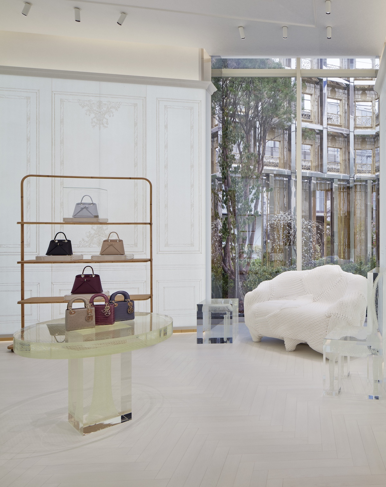

On 12 February, seventy-nine years to the day after Christian Dior opened the house on avenue Montaigne, a new store opened in the quiet hills of Daikanyama. It is sheathed, floor to sky, in bamboo dipped in gold.
Tokyo does not suffer monuments easily. The city is thrifty with permanence, given to tearing down what is twenty years old and putting up something twenty-two years new. So when a French house arrives and builds a 2,465-square-metre complex in a leafy residential neighbourhood and wraps it in 740 square metres of bamboo — and means to keep it there — the choice registers as an argument. An argument about longevity, and about how Paris would like to be read by Tokyo from this point forward.
The pavilion sits in Daikanyama, a low-rise ward that has spent the last decade collecting the city's most literate bookshop, its most self-possessed coffee bars, and the largest concentration of stylists and architects per square metre in Shibuya. It is not a tourist neighbourhood. It is a place where Tokyo's insiders actually live. Dior has understood this, and has behaved accordingly.
The facade, read closely
The silhouette quotes the avenue Montaigne boutique. The restrained Regency lines, the generous upper storeys, the elegant proportion of window to wall — all of it reads as Paris in its dress coat. But the surface has been handed over to Tokyo. A dense palisade of vertical aluminium rods, recycled from domestic Japanese supply and anodised into a bamboo colour that is somewhere between mustard and champagne, stands in for the stone of the Parisian house. In certain afternoon light the thing almost disappears. In others it shines like a carp.
The gesture is not camouflage. It is translation. Paris is being asked to speak Japanese, and Dior has decided that the way to do it is through a cladding so local in idea that it borders on the vernacular. Bamboo groves at the gates of a shrine. Bamboo latticework at the edge of a tearoom. A house that normally communicates in marble has chosen, for this address, to communicate in a material closer to paper.
Paris is being asked to speak Japanese, and Dior has decided that the way to do it is through a cladding so local in idea that it borders on the vernacular.
Sienna CaldwellInside the atrium
Visitors arrive through a circular atrium that runs the full height of the pavilion, its walls lined in Awa washi, the handmade paper from Tokushima that monks have used for centuries to protect sutras from damp. Light is filtered rather than projected. Sound softens. The space is calibrated to make the next step feel like an arrival rather than a transaction.
Six rooms open off the atrium in sequence. A Timeless Room for house heritage. A Small Leather and Accessory Bar where the exit purchase is edited into a bar-top ritual. A Leather Goods Room for the larger pieces. A Men's Collection Room, where the fitting rooms are lined in walls of tatami — a particularly brave choice, given that tatami is a floor material and almost no one has ever treated it as wallpaper. A Women's Collection Room on the upper level. And a Café Dior, tucked in its own volume.
The bones are French. The finishing is Japanese. Versailles parquet runs beneath custom furniture by the design duo We+, who worked the pieces in recycled fibres. Floral installations by Azuma Makoto, the botanical artist who has suspended flowers in blocks of ice and sent bouquets to the stratosphere, appear as quietly as if they had grown there.

Photography by Daici Ano / Wallpaper*
A garden, and a chef
Outside, Seijun Nishihata, the landscape designer who calls himself a plant hunter, has set a strolling garden in the Edo tradition. Three species have been chosen for their specific symbolism rather than their visual volume. Pine for endurance. Cherry for transience. Plum for the first thaw. A pond holds koi made of luminous glass, which catch the last of the light in a way that real koi, being fish, rarely bother to do.
The garden opens onto Café Dior, and here the project turns from a store into something rarer. The kitchen is the territory of Anne-Sophie Pic, whose eponymous restaurant in Valence has held three Michelin stars for nearly two decades, and who is now one of the few women in France to wear that constellation. She has built a menu for the café that does not lean into the usual French-in-Japan cliches. No rose syrup. No laduree pastiche. What she has done, on early reading, is more interesting: a French kitchen cooking as if it had been posted to Tokyo for ten years and had come to love miso and yuzu without forgetting its mother tongue.
Why Daikanyama, and why now
Delphine Arnault, who has run the house for a little over two years, has been pruning the Dior footprint of the Galliano-era excess and replacing it with fewer, larger, more architecturally complete addresses. The Bamboo Pavilion is the first of the new generation to open outside of Europe. That it has gone to Tokyo, and specifically to Daikanyama rather than Ginza, is the most interesting editorial decision of the project.
Ginza is where international brands traditionally assert themselves in the Japanese market. It is the maximalist avenue, the place where cladding and signage compete for altitude. Daikanyama is the opposite: low, considered, almost bashful. To plant a flagship here is to say that Dior would rather be near the kitchen than at the parade. It is also, quietly, a bet on who the Tokyo Dior customer actually is. Not the tourist. Not the first-purchase foreigner. The woman who has been wearing the house for twenty years and no longer wants to queue.
The gold question
One risks, at a project like this, the familiar Japanese critique: that a Western house has treated the country as a mood board. That it has pulled a few motifs — the bamboo, the koi, the washi — and called the exercise a dialogue. The Bamboo Pavilion answers the criticism not with rhetoric but with credits. Twenty-odd local artisans and designers are named on the walls. Nishihata is a real figure with a real nursery. Azuma Makoto is Japan's most serious botanical sculptor. Pic has staffed the café with a Tokyo kitchen rather than a French one on secondment.
The gold of the bamboo will weather. In five years, if the pavilion is loved the way Dior hopes it will be, the cladding will have lost its first glow and taken on the soft patina that bronze develops over a Parisian winter. In ten, it will have become part of Daikanyama's skyline the way a particular shop at the end of a particular street always does. The most generous thing the house could have built, in a city that does not suffer monuments easily, is a building that asks to be looked at for a long time. This is what, in Daikanyama, it has done.